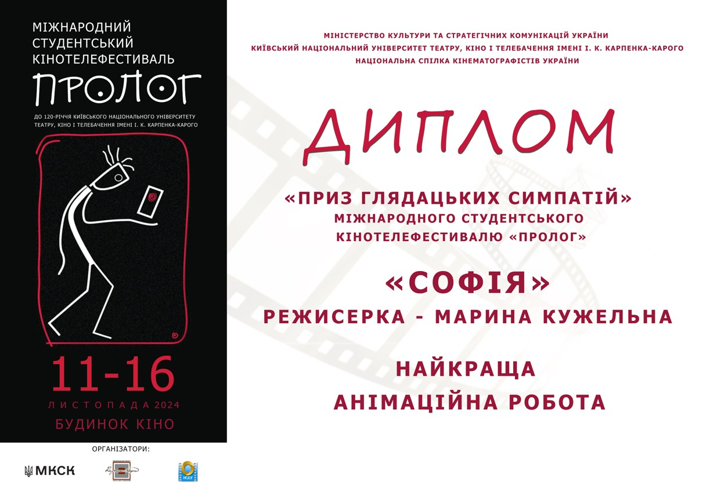
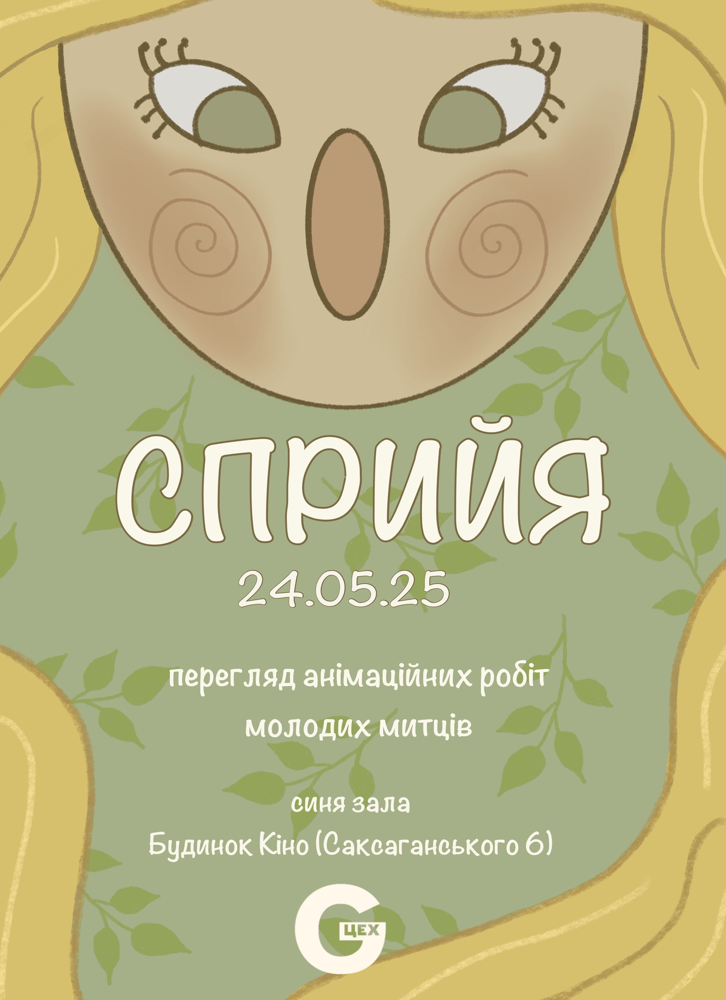
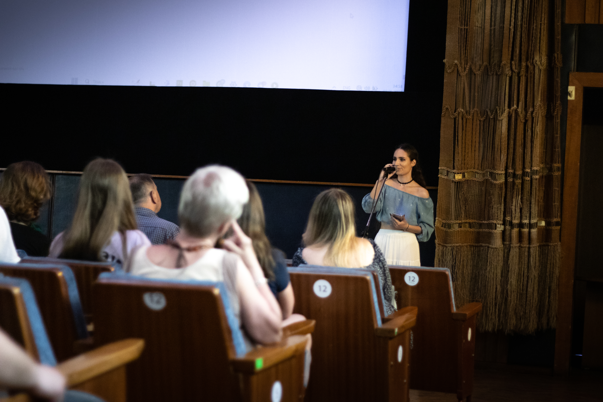

Марина Кужельна
З дитинства я занурювалась у світ творчості: знімала короткометражні фільми, навчалась монтажу, малювала, створювала декорації, займалась рукоділлям. Згодом це захоплення привело мене до анімації. Музика, особливо її глибокі, змістовні фрагменти, викликала у мені сильні емоції — саме вони ставали основою для майбутніх сюжетів.
Вступила до Київського національного університету театру, кіно і телебачення імені Івана Карпенка-Карого, обравши спеціальність «режисура анімаційного кіно». Тут з’явилися мої перші авторські анімаційні короткометражки.
Наразі я зосереджуюсь переважно на створенні музичних кліпів, однак працюю також над анімаціями для театрів, поезії, мультиплікаційними проєктами та іншими творчими форматами. Відкрита до співпраці та нових ідей.


